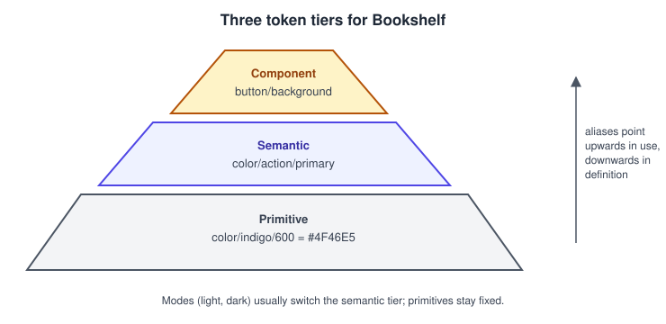
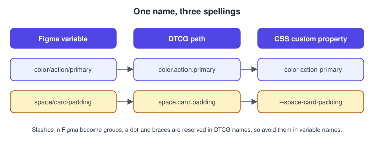
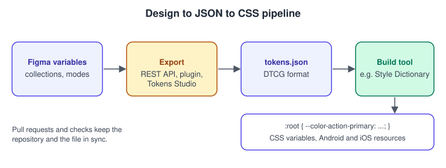

Design Tokens
|
This content was generated with the assistance of AI and should be verified against the official documentation before being relied on in production. |
This page was written on 2026-10-30 against the UI3 interface of Figma Design. A design token is a concept rather than a Figma feature: in Figma it is implemented with variables, which are generally available (since 2024-04-16). Creating and editing variables needs a Full seat. Variables and modes exist on every plan, but the number of modes per collection depends on the plan, and publishing variables to a team library needs a paid or education plan. The Variables REST API is limited to full members of Enterprise organisations. Exporting and importing tokens through third-party tools is ecosystem material and is labelled as such below. Variables themselves are explained on Variables, Collections and Modes; this page covers the design-system idea that sits on top of them.
What a design token is
A design token is a named, platform-neutral design decision: a colour, a spacing step, a corner radius, a font size, a duration. Instead of writing #4F46E5 in a design and again in a stylesheet, you name the decision (for Bookshelf, "the colour of primary actions") and let every consumer read the name. When the decision changes, one value changes and every design and every build follows.
A token therefore has three parts: a name, a value, and a type. Optional parts are a description and metadata. The same token can be consumed as a Figma variable, a CSS custom property, an Android resource or an iOS constant; the token is the shared source, and each platform file is a translation of it.
Variables are Figma’s native tokens
In UI3 you work with tokens through variables: open the Local variables panel from the right sidebar (the Variables tab when nothing is selected) or from the Variables tab of the left navigation bar, add a collection, add variables and give each one a value per mode. Figma’s own documentation says variables and modes can be used to implement design tokens for a design system.
| Token concept | Figma implementation |
|---|---|
Token name and group |
Variable name; a slash in the name creates a group in the panel |
Token value |
Variable value, one per mode |
Token type |
Variable type (color, number, string, boolean) |
Theme or context |
Mode within a collection |
Alias |
A variable whose value is another variable |
Platform name |
The code syntax field, set separately per platform |
Variables hold colours, numbers, strings and booleans. Font families, shadows and gradients are not single variable values, so a full token set usually combines variables with styles; the comparison is on Styles.
Token tiers
Design systems commonly organise tokens in tiers. The names of the tiers vary between teams; the structure is a convention, not a Figma rule.

-
Primitive tokens (also called global or reference tokens) hold raw values with names that describe what they are:
color/indigo/600,space/16. They have no meaning of their own and are not applied directly to designs. -
Semantic tokens (alias tokens) describe intent and point at a primitive:
color/action/primaryiscolor/indigo/600. Their modes carry the light and dark themes, socolor/surface/defaultcan resolve to a white primitive in light mode and a near-black one in dark mode. -
Component tokens are optional and scoped to one component:
button/backgroundpoints atcolor/action/primary. Add them only when a component needs to vary independently of the global meaning.
In Figma, a common arrangement is one collection for primitives with a single mode, and one collection for semantic tokens with a Light and a Dark mode whose values are aliases of the primitives. Aliasing and scoping, which keeps primitives out of the pickers designers see, are covered on the variables page.
Naming
Good token names describe purpose, not appearance, so a rename of the brand colour does not make names lie.

-
Use a consistent order such as category, role, variant, state:
color/action/primary/hover. -
Avoid names built on values (
blue-500-dark) at the semantic tier. -
In the DTCG format, token and group names must not contain
{,}or., because dots separate path segments and braces delimit aliases. Keep those characters out of Figma variable names if you plan to export.
The W3C Design Tokens format
The Design Tokens Community Group, a W3C community group, publishes a vendor-neutral file format for tokens. Its site announces the first stable version, 2025.10, with an announcement dated 2025-10-28. In the format:
-
a token is an object that contains
$value; the parent key is its name, and groups are plain nested objects -
$typeis optional on a token and can be inherited from the closest parent group, or from the token an alias points to -
$descriptionis an optional plain-text explanation -
an alias is written as a curly-brace path to a whole token, for example
{color.indigo.600} -
the preferred media type is
application/design-tokens+json, and the recommended extensions are.tokensand.tokens.json -
a dimension value is an object with a numeric value and a unit, which is either
pxorrem -
colour values are defined by a separate Color module and, in its examples, are objects with a colour space and components
Tools may add their own data under $extensions. The specification is the authority, so check it before relying on details such as colour syntax, which this page does not reproduce in full.
{
"color": {
"$type": "color",
"indigo": {
"600": {
"$value": { "colorSpace": "srgb", "components": [0.3, 0.3, 0.9] },
"$description": "Placeholder primitive for the Bookshelf brand colour"
}
},
"action": {
"primary": { "$value": "{color.indigo.600}" }
}
},
"space": {
"card": {
"padding": {
"$type": "dimension",
"$value": { "value": 16, "unit": "px" }
}
}
}
}The values above are placeholders, and the file contains no credentials.
Getting tokens out of Figma
Figma offers several routes. The first two are Figma’s own interfaces; the rest are ecosystem tools.
-
Variables REST API.
GET /v1/files/:file_key/variables/localreturns the local variables of a file together with the remote variables it uses, and needs thefile_variables:readscope;POST /v1/files/:file_key/variablescreates, updates and deletes variables in bulk and needsfile_variables:writeand edit access. The endpoints are available to full members of Enterprise organisations, and the reads are rate-limited at Tier 2 and the write at Tier 3. The response is Figma’s own structure, not the DTCG format, so a small script converts it. -
Plugin API. A plugin running inside the file can read and write variables. See Building Plugins.
-
Import and export of tokens files. Figma’s help centre describes importing design tokens from JSON files that follow the DTCG format, with Figma-specific data in
$extensionskeys prefixedcom.figma. Community discussions in late 2025 suggest the feature was announced at Schema 2025 and was not visible to every user, so check whether it is available in your file and plan before building a workflow around it. -
Tokens Studio is a third-party plugin that manages tokens in the DTCG format and can sync them with a Git repository. It is the successor of the plugin that older books call Figma Tokens. Check its own documentation for its current plans and limits.
-
Style Dictionary is an open-source build tool that transforms a token file into platform outputs such as CSS, Android resources and Swift. It is not part of Figma.
# Read the local variables of the Bookshelf design system file (Enterprise only).
# FIGMA_TOKEN is a personal access token read from the environment, never typed in a file.
curl --silent \
--header "X-Figma-Token: $FIGMA_TOKEN" \
"https://api.figma.com/v1/files/$FIGMA_FILE_KEY/variables/local" \
--output variables.jsonAuthentication and scopes are explained on REST API and Webhooks.
From design to JSON to CSS
The usual pipeline for Bookshelf has four stages: designers change variables in Figma, an export step produces a token file, a build step turns it into platform files, and the web app consumes CSS custom properties.

/* Generated from tokens.json; do not edit by hand. */
:root {
--color-indigo-600: #4f46e5;
--color-action-primary: var(--color-indigo-600);
--space-card-padding: 16px;
}
[data-theme="dark"] {
--color-action-primary: #a5b4fc;
}Source: Style Dictionary documentation
The output depends entirely on how the build is configured, so treat the CSS above as one possible result. For how the web side uses such properties see Variables and Media Queries and Theme and Colors.
Procedure: tokenise the Bookshelf colours
-
Open the Bookshelf Design System file and open the Local variables panel.
-
Create a collection named Primitives with one mode, and add colour variables such as
color/indigo/600. -
Create a second collection named Semantic with two modes, Light and Dark.
-
Add
color/action/primaryand set its value in each mode to an alias of a primitive, using the variable picker. -
In the variable’s code syntax settings, set the Web name to the CSS custom property, for example
--color-action-primary. -
Bind the fill of the primary button to
color/action/primaryand switch the frame mode to check both themes. -
Publish the library so that product files receive the tokens. See Libraries and Publishing.

The exact labels in the variable panel change between releases, so follow the current panel rather than the wording here.
Keeping design and code in sync
-
Choose one source of truth. Either Figma is the source and a pipeline exports to the repository, or the repository is the source and tokens are imported into Figma. Two-way editing without a rule creates conflicts.
-
Export through a pull request so that a developer reviews a token change like any code change.
-
Run the export in continuous integration on a schedule and compare it with the committed file to detect drift. This is a team practice, not a Figma feature.
-
Keep names stable. Renaming a variable breaks references in files that use the library until they update.
-
Document deprecation in the description before removing a token. Design-system governance is on Design Systems.
What older guides get wrong
Older books describe a plugin called Figma Tokens as the way to manage tokens; it has since been renamed Tokens Studio and is a third-party tool, so present it as ecosystem after native variables. Books written before variables were released on 2024-04-16 also use styles for everything, including colour and spacing; variables now carry colour, spacing and theming, and styles can contain variables but not the reverse. The consolidated list is on What Changed Since Older Guides.